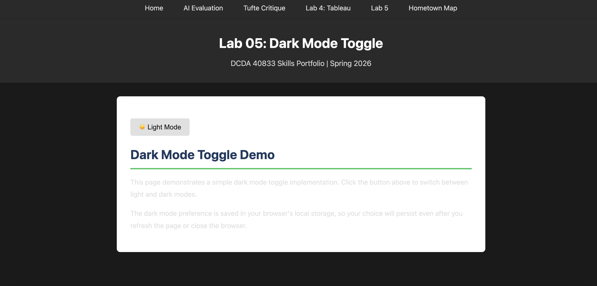

Lab 5 Overview
In Lab 5, I experimented with using AI to help me code parts of my portfolio website. The idea of the lab was to explore “vibe coding,” where you describe what you want and AI helps generate the code, while still making sure you actually understand what it’s doing. I used AI to help build a dark mode toggle for my site and also used it to help debug some issues with my navigation links and page structure. As I worked through the code, I had to read it carefully, test it in Live Server, and add comments explaining what each part does. This lab helped me see how AI can be really helpful when coding, but also how important it is to slow down and understand the code instead of just copying it.
Dark Mode Feature
For Experiment A, I used AI to help me build a dark mode toggle. When I click the button, the page switches between light and dark colors. The code works by adding or removing a class on the body, and the CSS changes the colors.
I understand how the button is selected using its ID and how a click event runs the function. I understand that toggling the “dark-mode” class is what changes the design. I would not have known how to use localStorage to save the setting without AI.
Experiment C: Debugging with AI
For debugging, I worked on fixing navigation and structure issues. At first, my links did not work because they were written as href="#", which is just a placeholder. AI helped me realize I needed to use real file names like lab04.html so the links would actually navigate.
I also learned that duplicate script tags or incorrect HTML structure can completely stop JavaScript from running. That helped me understand that debugging is not always about logic — sometimes it is just fixing structure.
My Understanding Spectrum
I understand how to select elements with getElementById and how addEventListener works. I understand what classList.toggle does and why it changes the appearance. I know what localStorage does conceptually, but I would not feel confident writing it without help.
My Vibe Coding Guidelines
- I will not submit code if I cannot explain what it does.
- I will test everything in Live Server after AI gives code.
- I will try simple fixes myself before asking AI.
- I will clearly state when AI helped generate code.
- I will use AI as a tool, not as a replacement for learning.
Screenshot / Demo
Below is a screenshot of my dark mode working:

Key Takeaways
- This lab helped me understand both the benefits and the risks of using AI when coding. AI was really helpful when I got stuck or needed help figuring out how to implement something like dark mode. At the same time, I realized how easy it would be to rely on it too much if I wasn’t careful. The biggest takeaway for me is that AI should be a tool that helps me learn, not something that replaces actually understanding the code.